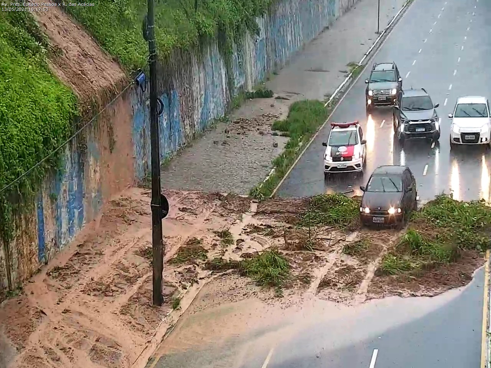
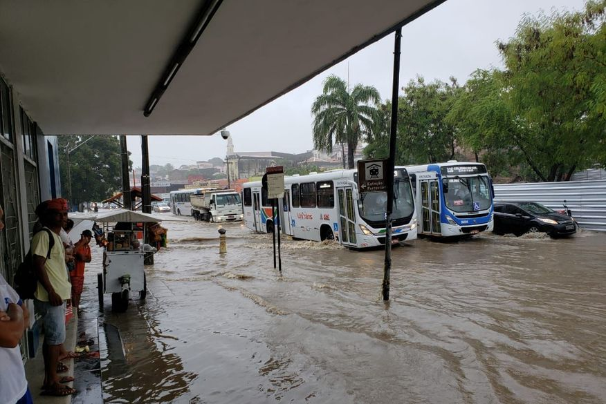

Previsão do Tempo em
João Pessoa

Chuva provoca queda de árvores em João Pessoa
Índice de 114mm de chuva nas últimas 24 horas já é maior do que a média histórica no mês de Fevereiro.

Chove mais de 140 mm em João Pessoa nas últimas 12h, diz Defesa Civil
Os bairros que mais registraram chuvas nesta madrugada foram os do Altiplano, Tambauzinho e Manaíra.

Alguns dos principais pontos da cidade que registram alagamentos históricos para Fevereiro.
O Inmet emitiui alerta amarelo devido ao acúmulo de chuvas para 84 municípios paraibanos.
Fortes chuvas deixam ruas e avenidas alagadas e semáforos afetados, em João Pessoa
De acordo com a Semob-JP, diversos semáforos estão com problemas e deixaram de funcionar.